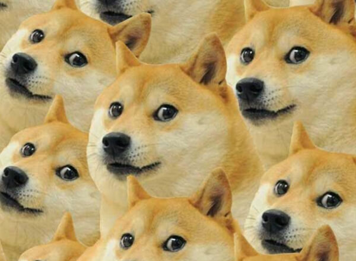
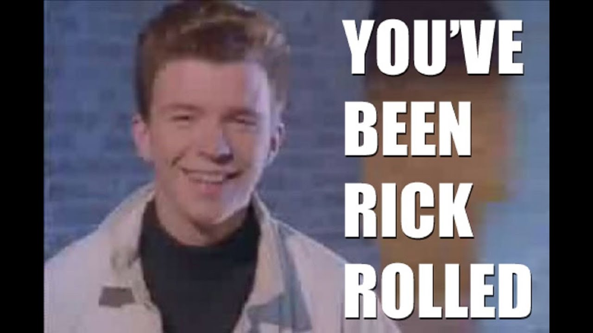
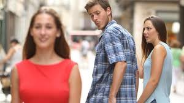
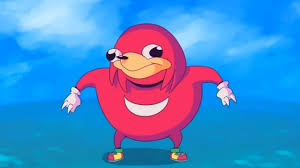
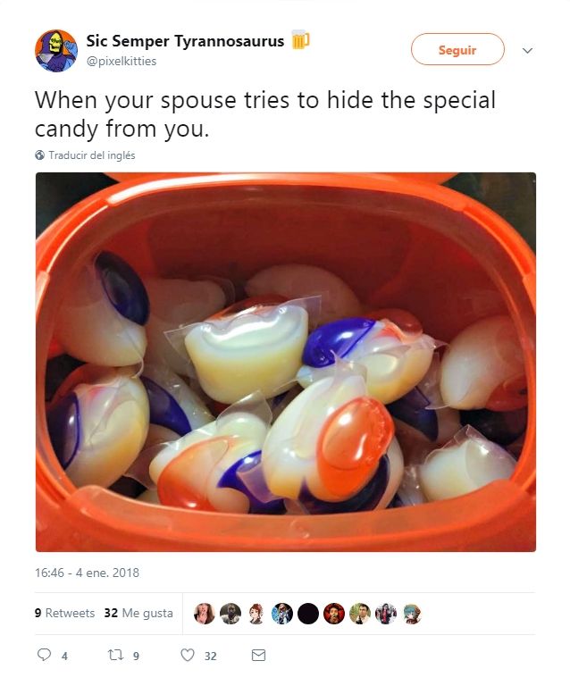
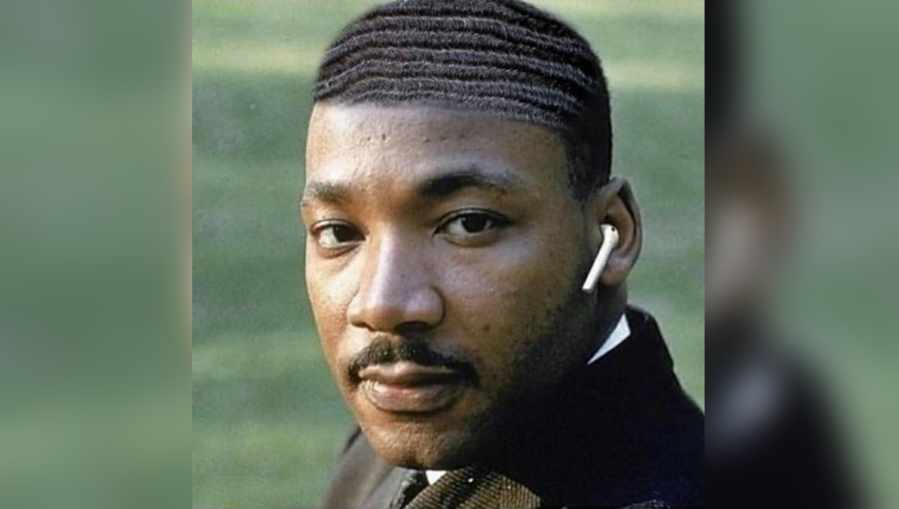
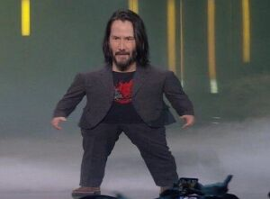

⬅Back
Memes
#1
Doge The Dog
An internet meme that was extremly popular around 2013 the picture of "doge" is the japanese Shibe inu dog caught off gaurd on camera
Meme Video
#2
Grumpy Cat
"Tardar Sauce" is a American Internet celebrity cat. She was known for her permanently "grumpy" facial appearance.

Meme Video
#3
Every Single "SpongeBob SquarePants" Meme ever created
SpongeBob SquarePants is a typically famous cartoon show that all kids love to watch but SpongeBob in particular show alot of emotion during the episodes that makes the memes pure and rich

Meme Video
#4
Pepe The Frog
Pepe The Frog is an Internet meme,Pepe originated in a comic by Matt Furie called Boy's Club,the meme mainly grew over myspace and 4chan in 2008.

Meme Video
#5
Rickrolling
Rickrolling is a form of trolling with the famous internet meme involving an unexpected experience from a famous Rick Astley song "Never Gonna Give You Up".
Meme Video
#6
Distracted BoyFriend Meme
Distracted BoyFriend Meme is a original stock photo of a couple going out on a date while the male stops to look at another female passing by while the girlfriend stares at him disgustingly this combo can be combined with real life situations.
#7
Ugandan Knuckles do you know the way?
This meme originates from the wonderful video game called "VRChat". It is a wonderful meme from a wonderful video game. This meme comes in various forms, such as "you do not know the way", which shows the true flexibility and power of this wonderful meme.
Meme Video
#8
Tide Pod Meme
Tide Pod Meme
Tide POD Challenge refers to a dare game involving the consumption of Tide PODS laundry detergent capsules, which are often compared to various fruit-flavored snack foods due to their packaging and appearance.
Meme Video
#9
Air-Pods
Apple AirPods are wireless earbuds made by the Apple technology company. While the subject of negative criticism by the general public upon its release, they grew in popularity over the following two years, receiving positive reviews from critics and users. The product has also been the subject in a variety of memes, referencing the perceived wealth of the owner.
Meme Video
#10
Keanu Reeves Memes
The Keanu Reeves Meme You're Breathtaking is a phrase shouted by a Microsoft Xbox E3 2019 press conference attendee Peter Sark during actor Keanu Reeves' presentation of video game Cyberpunk 2077, with Keanu Reeves reacting by calling him and everyone in the audience "breathtaking" in response. Online, still images of Keanu Reeves pointing at the audience paired with the quote has been circulated as an image macro.
